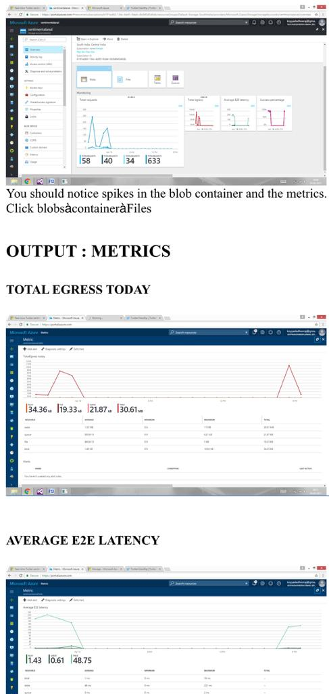

Stream Analytics of Trending Movies
Microblogging sites have advanced to end up noticeably a wellspring of changed sort of data. This is because of nature of microblogs on which individuals post ongoing messages about their suppositions on an assortment of topics, discuss current issues, whine, and express positive opinion for items they use in everyday life. Actually, organizations assembling such items have begun to survey these microblogs to get a feeling of general supposition for their item. Ordinarily these organizations ponder client responses and answer to clients on microblogs.
Twitter is a well-known microblogging administration where clients make status messages (called "tweets"). These tweets some of the time express conclusions about various subjects. We propose a strategy to naturally separate assumption (positive or negative) from a tweet. This is exceptionally helpful in light of the fact that it permits criticism to be amassed without manual mediation.. Our Project Emphasizes on identifying these opinions and sentiments across user programmed content being generated through twitter and create a well enhanced analysis engine using Azure Stream Analytics to provide the insights a certain user would like to gain knowledge to.
The opinion found inside remarks, criticism or scrutinizes give valuable pointers to a wide range of purposes. These opinions can be arranged either into two classes: positive and negative; or into an n-point scale, e.g., great, great, attractive, terrible, awful. It additionally encourages strategy producers or lawmakers to break down open slants regarding strategies, open administrations or political issues. This paper displays the observational consequences of a relative review that assesses the adequacy of distinctive classifiers, and demonstrates that the utilization of numerous classifiers in a half and half way can enhance the adequacy of opinion examination.
This assignment is normally characterized as arranging a given content (as a rule a sentence) into one of two classes: goal or subjective. This issue can some of the time be more troublesome than extremity classification. The subjectivity of words and expressions may rely on upon their unique situation and a target report may contain subjective sentences (e.g., a news article citing individuals' conclusions). In addition, as said by Su, results are to a great extent reliant on the meaning of subjectivity utilized when commenting on writings. Notwithstanding, Pang demonstrated that expelling target sentences from an archive before characterizing its extremity enhanced execution.
Stream Analytics is a service provided by the Microsoft Corporation in its Azure package that enables the developers to have an insight into the vast amount of fata being generated every day. Stream Analytics is a totally cost effective and an enhanced method to achieve deep insights into data. Stream Analytics makes it simple to set up continuous investigative calculations on information spilling from gadgets, sensors, sites, online networking, applications, foundation frameworks, and that's just the beginning.
>Stream Analytics is vastly used in real-time analytics of streaming data that is user generated via multiple social webs and micro-blogging sites. Such situations of constant spilling investigation can be found over all enterprises: customized, continuous stock-exchanging examination and alarms offered by monetary administrations organizations; ongoing extortion identification; information and personality assurance administrations; dependable ingestion and examination of information produced by sensors and actuators installed in physical articles (Internet of Things, or IoT); web clickstream investigation; and client relationship administration (CRM) applications issuing cautions when client encounter inside a time span is debased. Organizations are searching for the most adaptable, solid and practical approach to do such constant occasion stream information investigation to prevail in the profoundly focused present day business world.